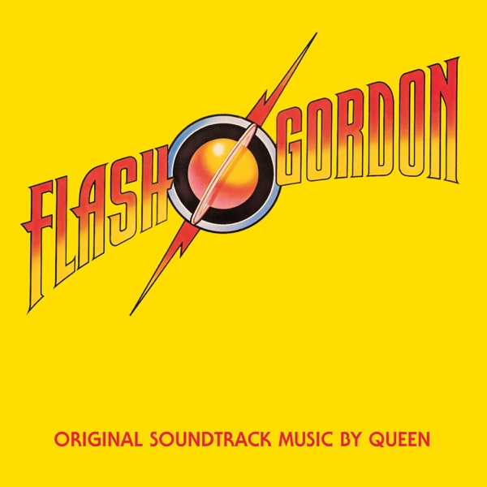

Flash Gordon (Original Soundtrack Music)
Queen
Upgrade idea: The 2022 Hollywood/UMe reissue (r25155592, D004064401) is a modern remaster on 180g and would be a sonic upgrade. The 2011 reissue (D000436501) is also available. Original first pressings like this one have collector value but the 2022 remaster is the better-sounding option.
- Original release
- 1980
- Pressing year
- 1980
- Country
- US
- Format
- Vinyl LP, Album, Club Edition
- Label / Cat#
- Elektra – 5E-518
- Genres
- Rock
- Styles
- Pop Rock, Classic Rock
- Discogs release
- 6188464
- Discogs master
- 12820
- Apple Music
- Flash Gordon (Original Soundtrack) [Deluxe Edition]
- Wikipedia
- Flash Gordon (Original Soundtrack Music)
Production notes
Tracklist (Discogs)
| A1 | Flash's Theme | |
| A2 | In The Space Capsule (The Love Theme) | |
| A3 | Ming's Theme (In The Court Of Ming The Merciless) | |
| A4 | The Ring (Hypnotic Seduction Of Dale) | |
| A5 | Football Fight | |
| A6 | In The Death Cell (Love Theme Reprise) | |
| A7 | Execution Of Flash | |
| A8 | The Kiss (Aura Resurrects Flash) | |
| B1 | Arboria (Planet Of The Tree Men) | |
| B2 | Escape From The Swamp | |
| B3 | Flash To The Rescue | |
| B4 | Vultan's Theme (Attack Of The Hawk Men) | |
| B5 | Battle Theme | |
| B6 | The Wedding March | |
| B7 | Marriage Of Dale And Ming (And Flash Approaching) | |
| B8 | Crash Dive On Mingo City | |
| B9 | Flash's Theme Reprise (Victory Celebrations) | |
| B10 | The Hero |
Tracklist (Apple Music)
| 1 | Flash's Theme | 3:29 |
| 2 | In the Space Capsule (The Love Theme) | 2:42 |
| 3 | Ming's Theme (In the Court of Ming the Merciless) | 2:40 |
| 4 | The Ring (Hypnotic Seduction of Dale) | 0:57 |
| 5 | Football Fight | 1:28 |
| 6 | In the Death Cell (Love Theme Reprise) | 2:24 |
| 7 | Execution of Flash | 1:05 |
| 8 | The Kiss (Aura Resurrects Flash) | 1:44 |
| 9 | Arboria (Planet of the Tree Men) | 1:41 |
| 10 | Escape from the Swamp | 1:43 |
| 11 | Flash to the Rescue | 2:43 |
| 12 | Vultan's Theme (Attack of the Hawk Men) | 1:12 |
| 13 | Battle Theme | 2:18 |
| 14 | The Wedding March | 0:55 |
| 15 | Marriage of Dale and Ming (And Flash Approaching) | 2:04 |
| 16 | Crash Dive On Mingo City | 1:00 |
| 17 | Flash's Theme Reprise | 1:23 |
| 18 | The Hero | 3:31 |
| 1 | Flash | 2:49 |
| 2 | The Hero (October 1980... Revisited) | 2:57 |
| 3 | The Kiss (Early Version, March 1980) | 1:12 |
| 4 | Football Fight (Early Version, No Synths! February 1980) | 1:56 |
| 5 | Flash (Live In Montreal, November 1981) | 2:12 |
| 6 | The Hero (Live In Montreal, November 1981) | 1:46 |
Personnel & credits
- Queen — Arranged By
- Howard Blake — Arranged By [Additional Orchestral Arrangements By], Conductor
- John Deacon — Bass Guitar, Guitar, Synthesizer
- Roger Taylor — Drums, Vocals, Synthesizer
- Alan Douglas (2) — Engineer
- Mack (2) — Engineer
- Queen — Executive-Producer
- Brian May — Lead Guitar, Vocals, Synthesizer
- Freddie Mercury — Lead Vocals, Synthesizer
- Brian May — Producer
- Mack (2) — Producer
- Eric Tomlinson — Recorded By
- John Richards — Recorded By
- Brian May — Written-By
- Freddie Mercury — Written-By
- John Deacon — Written-By
- Roger Taylor — Written-By
Identifiers
- Matrix / Runout: 5E-518 A (Side A, Etched And Scratched Out )
- Matrix / Runout: 7 SP ESR R-153474A 1-1 (Side A, Etched)
- Matrix / Runout: 5E-518 B (Side B, Etched And Scratched Out)
- Matrix / Runout: SP ESR 1-1 SM7-2 R-153474B (Side B, Etched)
Notes
Album produced for Queen Productions 1980.
Original recordings at The Town House, The Music Centre and Advision, except "The Hero" At Utopia Studios.
Recorded At Anvil Studios.
Copyright 1980 Queen Productions Ltd./Starling Productions Ltd.
This version has "R 153474" printed on label, above "Produced by" on both sides. The runout has a "P" and a "C" in the curves of an "S" stamped into it.
Notes & discrepancies
- Track count differs: Discogs=18, Apple Music=24
Queen’s 1980 sci-fi film soundtrack — a unique album of orchestral cues, sound design, and rock tracks. ‘Flash’ is a stadium anthem. Original 1980 US pressing on Elektra (5E-518), pressed at Specialty Records (SP). Deadwax SP ESR 1-1 SM7-2 R-153474 — a true first pressing of a cult Queen record.